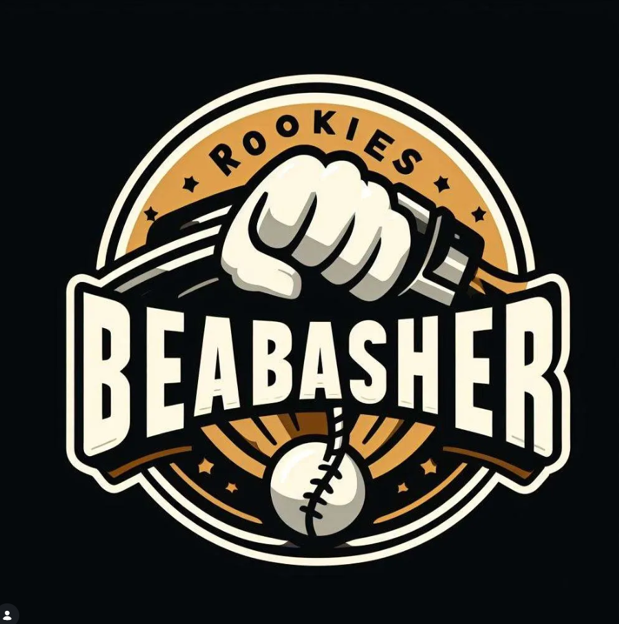
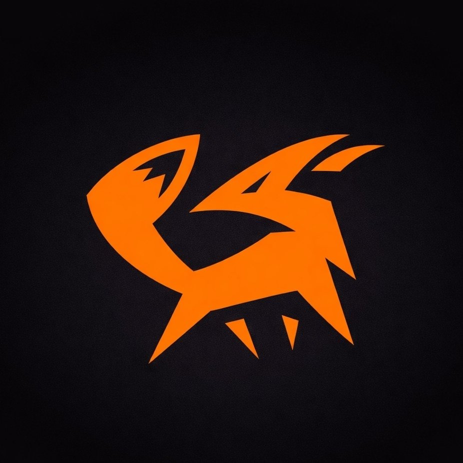

Clan Events
Rookie Weekly Bash
✧
The Journey's End
View Overall Reflection
📚
All Weeks in One
Weekly Bash Chronicles

Week One
Week Two

Week Three
Week Four
Week Five
Week Six
Week Seven
← Return to Rookies
 Week Four
Week Four
 Week Six
Week Six
 Week Seven
Week Seven